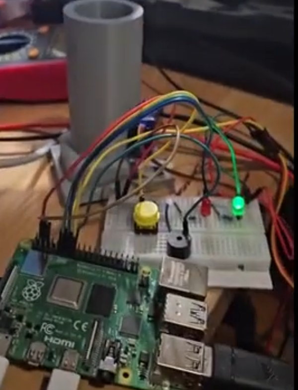
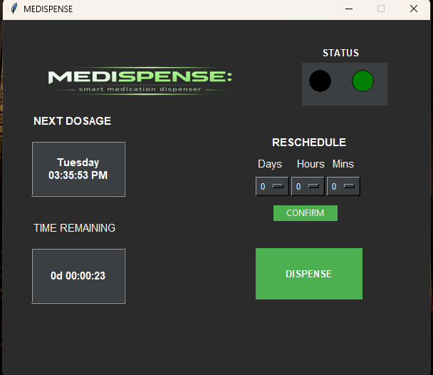

"Medispense" was an embedded systems project for a level-200 unit, built using a 3D-printed dispenser housing, a Raspberry Pi, and a servo. It wasn't especially inspired as a concept, but it was my first attempt at building something with an actual GUI alongside embedded hardware — rather than just terminal or serial I/O. A carer sets a dosage schedule through the Tkinter interface, and once medication is due, the patient can dispense via either the physical push button (wired to a GPIO pin) or the on-screen UI. The system also fires an SMTP email when a dose is coming up, and an overdue alert if it gets missed. check it out
The obvious shortcoming is mechanical: the prototype dispenses with a single servo retraction, which gives almost no precision over quantity. A proper version would benefit from a twist-feed mechanism and either an IR sensor or a load cell to confirm exactly one dose has been released. I deliberately avoided over-engineering it — proximity sensors and the like felt like scope creep for a first prototype — but those would be the right next steps.
People hate Tkinter but I think it's neat. It doesn't have to look like shovelware from 1996. (See, this looks like shovelware from 2001!)
